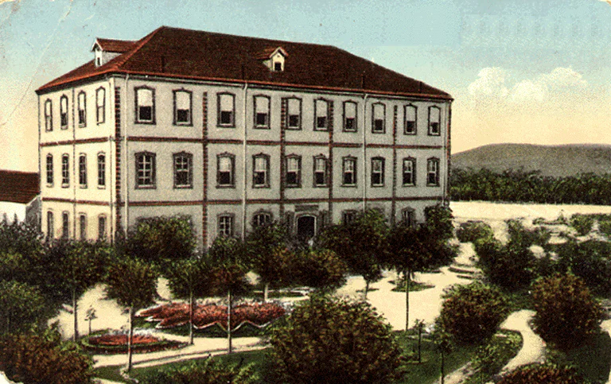
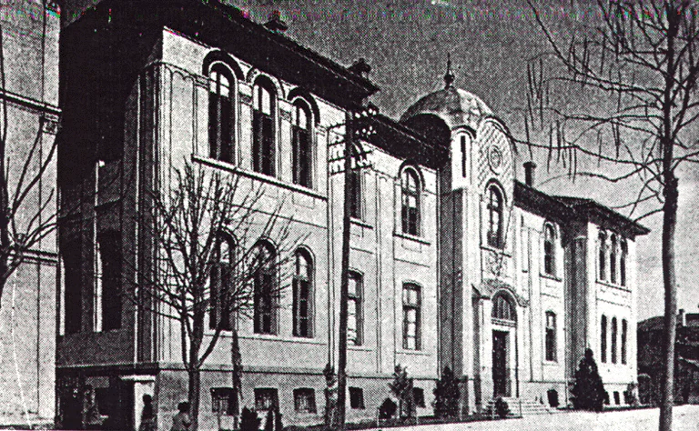
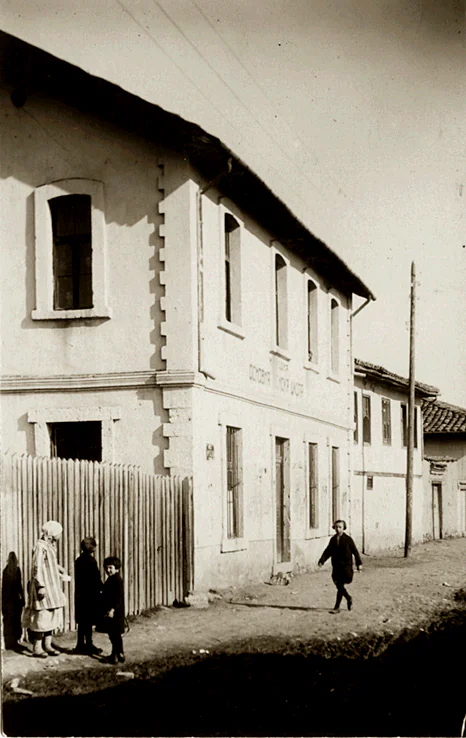
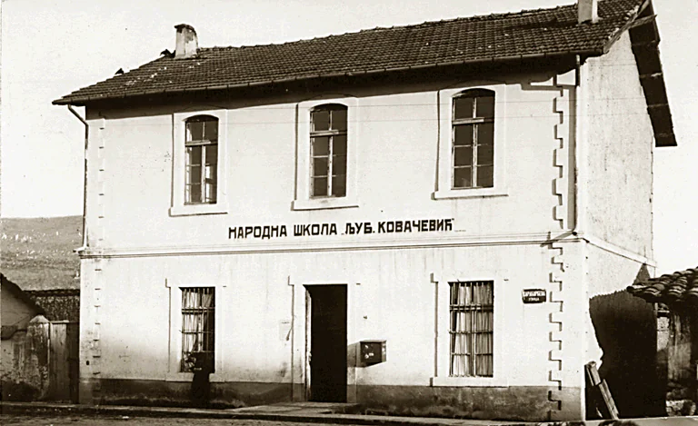
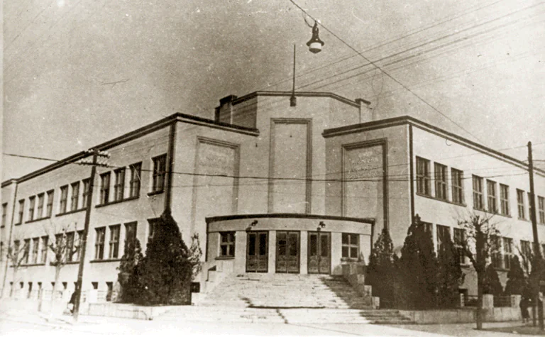
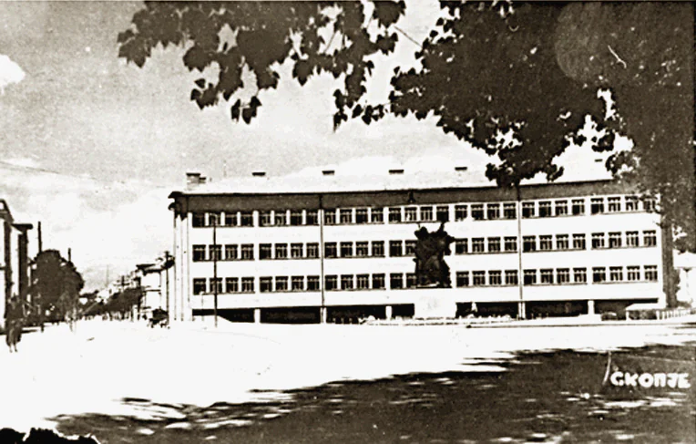

Φιλοσοφική Σχολή
- Υλοποίηση
- Κόλε Τσασούλε, Μπλαγκόγια Ντρνκοφ
- Έτος
- 1947
- Διάρκεια
- 00:04

Το γυμνάσιο Ινταντίγια. Χτίστηκε στα τέλη του 19ου αιώνα. Η φοίτηση διαρκούσε οκτώ χρόνια, και μπορούσαν να τη παρακολουθήσουν μαθητές όλων των θρησκευμάτων. Αργότερα το κτίριο έγινε Διδασκαλείο, έως τον σεισμό του 1963, στον οποίο υπέστη σοβαρές ζημιές. Γι' αυτό το 1965 κατεδαφίστηκε, και ως ενθύμιο έμεινε η είσοδος του κτιρίου με τους τέσσερις κίονες. Μέχρι σήμερα οι Σκοπιανοί αποκαλούν αυτή την περιοχή Ινταντίγια. Στο βάθος η σχολή τεχνών και επαγγελμάτων.

Το Διδασκαλείο (Δεκαετία του 1920)

Τμήμα του δημοτικού πάρκου με το κτίριο της σχολής τεχνιτών. (Δεκαετία του 1920)

Το κτίριο του γυμνασίου Ινταντίγια, και μετά τον Β΄ Παγκόσμιο Πόλεμο «Διδασκαλείο», που καταστράφηκε στον καταστροφικό σεισμό της 26ης Ιουλίου 1963.

Η Σχολή Καλλιτεχνικών Επαγγελμάτων, χτισμένη στα τέλη του 19ου αιώνα. Βρισκόταν πολύ κοντά στο Διδασκαλείο. Στον σεισμό του 1963 υπέστη σοβαρές ζημιές και γι' αυτό κατεδαφίστηκε.

Το Πανεπιστήμιο των Σκοπίων το 1920 στην προκυμαία του Βαρδάρη. Εκεί στεγαζόταν η Φιλοσοφική Σχολή ως μέρος του Πανεπιστημίου του Βελιγραδίου.

Το Πανεπιστήμιο των Σκοπίων το 1920 στην προκυμαία του Βαρδάρη. Εκεί στεγαζόταν η Φιλοσοφική Σχολή ως μέρος του Πανεπιστημίου του Βελιγραδίου.

Το κτίριο της αυλής του Γυμνασίου Αρρένων. (1912)

Το Γυμνάσιο Αρρένων των Σκοπίων, χτισμένο το 1902-04. Διακρίνεται για τα νεοκλασικά του στοιχεία. Στο πρώτο πλάνο η οδός «Πουανκαρέ», αργότερα «Λένινγκραντσκα».

Το Γυμνάσιο Αρρένων, χτισμένο το 1902.

Ο Μεγάλος Μεντρεσές, στην οδό Ιλιντένσκα (Δεκαετία του 1920)

Το δημοτικό σχολείο «Παναγία» - Δεκαετία του 1920.

Δημοτικό σχολείο «Γιόβαν Σκέρλιτς» - Δεκαετία του 1920.

Τρίτο Δημοτικό Σχολείο (Δεκαετία του 1920)

Το σερβο-εβραϊκό δημοτικό σχολείο στην εβραϊκή συνοικία.
(τέλη του 19ου αιώνα)

Το δημοτικό σχολείο «Τζούρα Γιάκσιτς» (Δεκαετία του 1920)

Δημοτικό σχολείο «Βασίλισσα Μαρία» - Δεκαετία του 1920.

Το δημοτικό σχολείο «Τσάρος Δουσάν», δίπλα στο κτίριο Μάτσουρα στην πλατεία της πόλης - Δεκαετία του 1920.
Το δημοτικό σχολείο «Τσάρος Δουσάν», δίπλα στο κτίριο Μάτσουρα στην πλατεία της πόλης - Δεκαετία του 1920.

Το δημοτικό σχολείο «Μπράνκο Ράντιτσεβιτς» - Δεκαετία του 1920.

Δημοτικό σχολείο «Λιούμπα Κοβάτσεβιτς» - Δεκαετία του 1920.

Δημοτικό σχολείο «Βλαντίμιρ Κάριτς» - Δεκαετία του 1920.

Δημοτικό σχολείο «Ντοσίτεϊ Ομπράντοβιτς», στη συνοικία Σαούκ Τσέσμα - Τσαΐρ - Δεκαετία του 1920.

Δημοτικό σχολείο «Βουκ Στεφάνοβιτς Καράτζιτς» - Δεκαετία του 1920.

Δημοτικό σχολείο «Μεχμέτ Σοκόλοβιτς» - Δεκαετία του 1920.

Δημοτικό σχολείο «Οσμάν Τζίκιτς» - Δεκαετία του 1920.

Η Εμπορική Ακαδημία - Δεκαετία του 1920.

Η Εμπορική Ακαδημία - Δεκαετία του 1920.

Η αυλή του Γυμνασίου Αρρένων - Δεκαετία του 1920.

Το νέο κτίριο του δημοτικού σχολείου «Ντοσίτεϊ Ομπράντοβιτς», χτισμένο τη δεκαετία του 1930.

Το δημοτικό σχολείο «Γκότσε Ντέλτσεφ». (φωτογραφία του 1934)

Το δημοτικό σχολείο «Γκότσε Ντέλτσεφ». (φωτογραφία περίπου του 1950)

Το Γυμνάσιο Θηλέων - τη νύχτα. Στο πρώτο πλάνο το μνημείο των απελευθερωτών των Σκοπίων. (περίπου Δεκαετία του 1950)

Το Γυμνάσιο Θηλέων, χτισμένο τη δεκαετία του 1930· η φωτογραφία είναι της δεκαετίας του 1950. Μπροστά στο κτίριο το μνημείο «Οι απελευθερωτές των Σκοπίων»

Σχολή Θετικών Επιστημών - Δεκαετία του 1950

Το δημοτικό σχολείο «11 Οκτωβρίου» - Δεκαετία του 1960

Πολυτεχνική Σχολή - Δεκαετία του 1960


Κινηματογραφική επισκόπηση αρ. 10
 Υδραγωγείο4 καρτ-ποστάλ
Υδραγωγείο4 καρτ-ποστάλ Καλέ30 καρτ-ποστάλ
Καλέ30 καρτ-ποστάλ Γέφυρες60 καρτ-ποστάλ
Γέφυρες60 καρτ-ποστάλ Προκυμαία58 καρτ-ποστάλ
Προκυμαία58 καρτ-ποστάλ Πλατεία46 καρτ-ποστάλ
Πλατεία46 καρτ-ποστάλ Κτίρια66 καρτ-ποστάλ
Κτίρια66 καρτ-ποστάλ Χριστιανικοί ναοί19 καρτ-ποστάλ
Χριστιανικοί ναοί19 καρτ-ποστάλ Μουσουλμανικά κτίρια33 καρτ-ποστάλ
Μουσουλμανικά κτίρια33 καρτ-ποστάλ Λέσχη Αξιωματικών29 καρτ-ποστάλ
Λέσχη Αξιωματικών29 καρτ-ποστάλ Θέατρο28 καρτ-ποστάλ
Θέατρο28 καρτ-ποστάλ Σιδηροδρομικός σταθμός13 καρτ-ποστάλ
Σιδηροδρομικός σταθμός13 καρτ-ποστάλ Σχολεία36 καρτ-ποστάλ
Σχολεία36 καρτ-ποστάλ Πάρκα12 καρτ-ποστάλ
Πάρκα12 καρτ-ποστάλ Αγορές18 καρτ-ποστάλ
Αγορές18 καρτ-ποστάλ Δρόμοι38 καρτ-ποστάλ
Δρόμοι38 καρτ-ποστάλ Πανόραμα I60 καρτ-ποστάλ
Πανόραμα I60 καρτ-ποστάλ Πανόραμα II30 καρτ-ποστάλ
Πανόραμα II30 καρτ-ποστάλ Κολάζ55 καρτ-ποστάλ
Κολάζ55 καρτ-ποστάλ Πλημμύρες9 καρτ-ποστάλ
Πλημμύρες9 καρτ-ποστάλ Σεισμός27 καρτ-ποστάλ
Σεισμός27 καρτ-ποστάλ Σκόπια 200026 καρτ-ποστάλ
Σκόπια 200026 καρτ-ποστάλ